Cold Elemental (Arctic Blast/Hurricane)Topnaš vodič
Cold Elemental (Arctic Blast/Hurricane)Topnaš vodič
Leveling
Naš vodič
Wind druid
Hurricane je neurje okrog tebe, ki približno dve minuti dela cold škodo. Tornado je glavni napad s fizično škodo, vsak cast pa skrajša cooldown Gusta, druidovega skoka. Arctic Blast je curek ledu za bosse, ki zniža cold res. Cyclone Armor absorbira elementalno škodo. Arctic blast druid in wind druid sta isti build: 86–100 % top druidov maxa vse tri skille.
Prednosti
- Skoraj brez težav z imunimi: cold in fizična škoda.
- Velika mobilnost: Tornado polni Gust.
- S14: več škode za Twister, Tornado in Hurricane.
Slabosti
- Najmanj lifea med temi buildi (mediana ~1.300 na levelu 90+).
- Do 95+ pride 14 %.
- Ključna oprema (Horizon's Tornado, Frostwind, Medusa's Gaze) zahteva level 64–76.
Leveling
| Level | Točke | Zakaj |
|---|---|---|
| 1–11 | Arctic Blast vsak level | Curek ledu, zniža cold res |
| 6 | Cyclone Armor 1; Heart of Wolverine 1 | Absorbira elementalno škodo |
| 12 | Twister 1 | Predpogoj za Tornado |
| 12–23 | Arctic Blast do 20 | Glavna škoda do levela 24 |
| 18 | Gust 1, Spirit of Barbs 1 | Skok; predpogoj za Oak Sage |
| 24–43 | Tornado do 20 | Glavni napad |
| 30 | Hurricane 1, Oak Sage 1 | Oak Sage doda life tebi in mercu |
| 43+ | Hurricane do 20 → Cyclone Armor → Oak Sage in Gust | Tornado dobi +16 % na točko od Arctic Blast in Hurricane |
Skoraj polovica hitrih wind druidov je do levela ~80 levelala kot summon druid in potem respecala. Pot zgoraj gre brez respeca.
Končni build
Mediana top wind druidov na levelu 90+. Skupaj ~93 točk (level ~82). Predpogoji: Twister, Heart of Wolverine, Spirit of Barbs. 42 % jih maxa še Twister.
Za lažjo igro
Hurricane prižgi pred vsako skupino pošasti, nato streljaj Tornado od blizu, ker leti naravnost in včasih zgreši. Na bossih uporabi Arctic Blast: na levelu 20 zniža cold res za 25 % in lomi cold imune.
- Stati
- Strength za opremo, vse ostalo Vitality
- Merc
- Act 2 Defensive (Defiance) z Insight (64–68 % top wind druidov). Kasneje Infinity ali The Reaper's Toll, ki z Amplify Damage okrepi fizični Tornado.
Oprema
Leveling (level 1–45)
Pred mapami (level 45–80)
Mape (endgame)
FCR breakpointi (druid)
Rune za ves build (16)
 Nef
Nef Ral
Ral Amn
Amn Dol
Dol Hel
Hel Lem
Lem Pul
Pul Mal
Mal Ist ×2
Ist ×2 Gul
Gul Vex ×2
Vex ×2 Ohm ×2
Ohm ×2 Zod
ZodPlanerji (Hiim)
Arctic Blast 20 Cyclone Armor 20
Cyclone Armor 20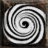
Hurricane 20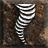
Tornado 20 Oak Sage 12
Oak Sage 12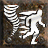
Gust 4 Carrion Vine 1
Carrion Vine 1 Heart of Wolverine 1
Heart of Wolverine 1 Poison Creeper 1
Poison Creeper 1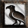
Raven 1 Solar Creeper 1
Solar Creeper 1 Spirit of Barbs 1
Spirit of Barbs 1 Summon Dire Wolf 1
Summon Dire Wolf 1 Summon Grizzly 1
Summon Grizzly 1 Summon Spirit Wolf 1
Summon Spirit Wolf 1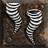
Twister 1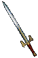
OrožjeFrostwind Druga rokaMedusa's Gaze
Druga rokaMedusa's Gaze HelmNightwing's Veil
HelmNightwing's Veil OklepSteel Carapace
OklepSteel Carapace RokaviceDracul's Grasp
RokaviceDracul's Grasp PasSiggard's Staunch
PasSiggard's Staunch ŠkornjiImp ShankMesh Boots
ŠkornjiImp ShankMesh Boots AmuletChaos talisman
AmuletChaos talisman PrstanConstricting RingPrstanThe Stone of Jordan
PrstanConstricting RingPrstanThe Stone of Jordan SwitchCall to ArmsAmnRalMalIstOhm · Flail
SwitchCall to ArmsAmnRalMalIstOhm · Flail Switch 2Lidless Wall
Switch 2Lidless Wall Hellfire Torch
Hellfire Torch Annihilus
AnnihilusMerc: Iron Wolf (Static Field)
 HelmFlickering FlameNefPulVex · Great Helm
HelmFlickering FlameNefPulVex · Great Helm OklepInnocenceGulLemZodHel · Sacred Armor
OklepInnocenceGulLemZodHel · Sacred Armor RokaviceOccultist
RokaviceOccultist ŠkornjiMarrowwalk
ŠkornjiMarrowwalk PasString of Ears
PasString of Ears OrožjeSkyfall
OrožjeSkyfall Druga rokaExile (eth)VexOhmIstDol · Targe
Druga rokaExile (eth)VexOhmIstDol · TargeRecepti in rune · 16 run, 4 runewordi
NefRalAmnDolHelLemPulMalIst ×2GulVex ×2Ohm ×2ZodKaj nosijo liki 90+ v S13 (skill Arctic Blast na 20)
 Gheed's Fortune 47 %Frostwind 44 %
Gheed's Fortune 47 %Frostwind 44 % Snowclash 42 %Medusa's Gaze 36 %Nightwing's Veil 28 %
Snowclash 42 %Medusa's Gaze 36 %Nightwing's Veil 28 % Horizon's Tornado 24 %
Horizon's Tornado 24 % Arachnid Mesh 23 %
Arachnid Mesh 23 % Skin of the Vipermagi 20 %The Stone of Jordan 20 %Bul-Kathos' Wedding Band 19 %Mara's Kaleidoscope 17 %
Skin of the Vipermagi 20 %The Stone of Jordan 20 %Bul-Kathos' Wedding Band 19 %Mara's Kaleidoscope 17 % Arkaine's Valor 17 %
Arkaine's Valor 17 %Video in vodiči
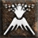
Fire ElementalTop
Leveling
Rune za ves build (17)
NefRalAmn ×2DolHelLemPulMalIst ×2GulVex ×2Ohm ×2ZodPlanerji (Hiim)
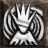
Armageddon 20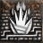
Fissure 20 Molten Boulder 20Volcano 20Oak Sage 12Arctic Blast 1Carrion Vine 1Cyclone Armor 1
Molten Boulder 20Volcano 20Oak Sage 12Arctic Blast 1Carrion Vine 1Cyclone Armor 1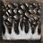
Firestorm 1Gust 1Heart of Wolverine 1Hurricane 1Poison Creeper 1Raven 1Solar Creeper 1Spirit of Barbs 1Summon Dire Wolf 1Summon Grizzly 1Summon Spirit Wolf 1Tornado 1Twister 1 OrožjeMang Song's Lessonkorupcija: socketi
OrožjeMang Song's Lessonkorupcija: socketi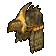
HelmRavenlorekorupcija: socketiOklepSteel Carapacekorupcija: socketiRokaviceDracul's Graspkorupcija: Mana per killPasSiggard's Staunchkorupcija: Faster Cast RateŠkornjiImp ShankMesh Boots · korupcija: Life per killAmuletGaea's Amulet of the Apprenticekorupcija: All SkillsPrstanThe Stone of Jordankorupcija: Mana per killPrstanBul Katho's Wedding Bandkorupcija: Life per killHellfire Torch Annihilus +2
Annihilus +2Merc: Iron Wolf (Static Field)
 HelmFlickering FlameNefPulVex · Bone Visage
HelmFlickering FlameNefPulVex · Bone Visage OklepInnocenceGulLemZodHel · Archon Plate
OklepInnocenceGulLemZodHel · Archon Plate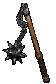
OrožjeStormlash Druga rokaExileVexOhmIstDol · Vortex Shield
Druga rokaExileVexOhmIstDol · Vortex Shield RokaviceTrang-Oul's ClawsŠkornjiMarrowwalkPasString of Ears
RokaviceTrang-Oul's ClawsŠkornjiMarrowwalkPasString of EarsRecepti in rune · 11 run, 3 runewordi
NefDolHelLemPulIstGulVex ×2OhmZod Fire Claws 20Molten Boulder 20Volcano 20Fissure 15Gust 3Arctic Blast 1Carrion Vine 1Cyclone Armor 1Firestorm 1Heart of Wolverine 1Hurricane 1Oak Sage 1Poison Creeper 1Solar Creeper 1Spirit of Barbs 1Tornado 1Twister 1
Fire Claws 20Molten Boulder 20Volcano 20Fissure 15Gust 3Arctic Blast 1Carrion Vine 1Cyclone Armor 1Firestorm 1Heart of Wolverine 1Hurricane 1Oak Sage 1Poison Creeper 1Solar Creeper 1Spirit of Barbs 1Tornado 1Twister 1 OrožjeHellrackv socketih: 5× Rainbow Facet (Fire) · korupcija: Faster Cast Rate
OrožjeHellrackv socketih: 5× Rainbow Facet (Fire) · korupcija: Faster Cast Rate Druga rokaBannerlord's Callv socketih: 2× Rainbow Facet (Fire) · korupcija: All SkillsOklepSteel Carapace (eth)v socketih: 3× Rainbow Facet (Fire) · korupcija: socketi
Druga rokaBannerlord's Callv socketih: 2× Rainbow Facet (Fire) · korupcija: All SkillsOklepSteel Carapace (eth)v socketih: 3× Rainbow Facet (Fire) · korupcija: socketi RokaviceMagefistkorupcija: Half Freeze DurationPasSiggard's Staunchkorupcija: Faster Cast RateŠkornjiImp ShankMesh Boots · korupcija: Mana per killAmuletBlood Craft - Druidkorupcija: Faster Cast RatePrstanWisp Projectorkorupcija: Faster Cast RatePrstanBul Katho's Wedding Bandkorupcija: Life per kill
RokaviceMagefistkorupcija: Half Freeze DurationPasSiggard's Staunchkorupcija: Faster Cast RateŠkornjiImp ShankMesh Boots · korupcija: Mana per killAmuletBlood Craft - Druidkorupcija: Faster Cast RatePrstanWisp Projectorkorupcija: Faster Cast RatePrstanBul Katho's Wedding Bandkorupcija: Life per kill SwitchCall to ArmsAmnRalMalIstOhm · Double AxeSwitch 2Lidless Wallkorupcija: All SkillsHellfire TorchAnnihilus +2
SwitchCall to ArmsAmnRalMalIstOhm · Double AxeSwitch 2Lidless Wallkorupcija: All SkillsHellfire TorchAnnihilus +2Merc: Iron Wolf (Static Field)
OrožjeSkyfallv socketih: 2× Rainbow Facet (Lightning) · korupcija: Light Pierce HelmGriffon's Eye (eth)v socketih: 3× Rainbow Facet (Lightning) · korupcija: socketiOklepInnocence (eth)GulLemZodHel · Sacred ArmorDruga rokaExile (eth)VexOhmIstDol · Vortex ShieldRokaviceOccultist (eth)korupcija: Faster Cast RateŠkornjiMarrowwalk (eth)PasArachnid Mesh (eth)korupcija: Faster Cast Rate
HelmGriffon's Eye (eth)v socketih: 3× Rainbow Facet (Lightning) · korupcija: socketiOklepInnocence (eth)GulLemZodHel · Sacred ArmorDruga rokaExile (eth)VexOhmIstDol · Vortex ShieldRokaviceOccultist (eth)korupcija: Faster Cast RateŠkornjiMarrowwalk (eth)PasArachnid Mesh (eth)korupcija: Faster Cast RateRecepti in rune · 14 run, 3 runewordi, 1 craft
RalAmn ×2DolHelLemMalIst ×2GulVexOhm ×2ZodKaj nosijo liki 90+ v S13 (skill Volcano na 20)
Magefist 57 %Gheed's Fortune 48 %Steel Carapace 46 %Siggard's Staunch 41 %Mang Song's Lesson 38 %Arachnid Mesh 23 %Bul-Kathos' Wedding Band 19 %Hellrack 17 %Bannerlord's Call 16 %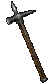
Earthshaker 15 %Mara's Kaleidoscope 13 %Video in vodiči
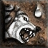
RabiesTop
Leveling
Rune za ves build (21)
 Tir
Tir EthRal ×2Amn ×2
EthRal ×2Amn ×2 Shael ×4HelLem
Shael ×4HelLem Um ×2Mal ×2IstGulOhm
Um ×2Mal ×2IstGulOhm LoZod
LoZodPlanerji (Hiim)
 Feral Rage 20
Feral Rage 20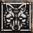
Lycanthropy 20Poison Creeper 20Rabies 20Oak Sage 11Carrion Vine 5Solar Creeper 5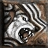
Fury 1Heart of Wolverine 1Spirit of Barbs 1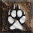
Werewolf 1 OrožjeGriefEthTirLoMalRal · Phase Blade
OrožjeGriefEthTirLoMalRal · Phase Blade Druga rokaSpirit Wardkorupcija: ICB FBR
Druga rokaSpirit Wardkorupcija: ICB FBR HelmJalal's Manev socketih: 2× Rainbow Facet (Poison) · korupcija: socketi
HelmJalal's Manev socketih: 2× Rainbow Facet (Poison) · korupcija: socketi OklepSpectral Plate (eth)v socketih: Rainbow Facet (Poison) · korupcija: socketi
OklepSpectral Plate (eth)v socketih: Rainbow Facet (Poison) · korupcija: socketi RokaviceTitan's Gripkorupcija: FBR
RokaviceTitan's Gripkorupcija: FBR PasVerdungo's Hearty Cordkorupcija: Half Freeze Duration
PasVerdungo's Hearty Cordkorupcija: Half Freeze Duration ŠkornjiWaterwalkAmuletBlood Craft - Druidkorupcija: Faster Run WalkPrstanBul Katho's Wedding BandPrstanBul Katho's Wedding BandHellfire TorchAnnihilus +2
ŠkornjiWaterwalkAmuletBlood Craft - Druidkorupcija: Faster Run WalkPrstanBul Katho's Wedding BandPrstanBul Katho's Wedding BandHellfire TorchAnnihilus +2Merc: Rogue Scout (Vigor)
 HelmVampire Gaze
HelmVampire Gaze OklepInnocenceGulLemZodHel · Gothic PlateRokaviceDracul's GraspPasString of EarsŠkornjiMarrowwalk
OklepInnocenceGulLemZodHel · Gothic PlateRokaviceDracul's GraspPasString of EarsŠkornjiMarrowwalk OrožjePus SpitterDruga rokaAbyssal Ward
OrožjePus SpitterDruga rokaAbyssal WardRecepti in rune · 10 run, 2 runeworda, 1 craft
TirEthRalAmnHelLemMalGulLoZodFeral Rage 20Lycanthropy 20Poison Creeper 20Rabies 20Oak Sage 7Werewolf 6Carrion Vine 5Solar Creeper 5Heart of Wolverine 1Spirit of Barbs 1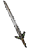
OrožjePlague Bearerv socketih: 4× Rainbow Facet (Poison) · korupcija: socketiDruga rokaSpirit Wardv socketih: 2× Rainbow Facet (Poison) · korupcija: ICB FBRHelmJalal's Manev socketih: 3× Rainbow Facet (Poison) · korupcija: socketiOklepSpectral Plate (eth)v socketih: 3× Rainbow Facet (Poison) · korupcija: socketiRokaviceTitan's Gripkorupcija: FBRPasVerdungo's Hearty Cordkorupcija: Half Freeze DurationŠkornjiWaterwalkkorupcija: Life per killAmuletBlood Craft - Druidkorupcija: Faster Run WalkPrstanBul Katho's Wedding Bandkorupcija: Life per killPrstanBul Katho's Wedding Bandkorupcija: Life per killHellfire TorchAnnihilus +2Merc: Rogue Scout (Vigor)
HelmVampire GazeOklepSpectral Plate (eth)RokaviceDracul's GraspPasSiggard's StaunchŠkornjiMarrowwalkOrožjePus SpitterDruga rokaAbyssal WardRecepti in rune · 1 runa, 1 craft
AmnCarrion Vine 20Feral Rage 20Lycanthropy 20Poison Creeper 20Rabies 20Solar Creeper 5Fury 1Heart of Wolverine 1Oak Sage 1Spirit of Barbs 1Werewolf 1Druga rokaSpirit Wardv socketih: 3× Rainbow Facet (Poison) · korupcija: socketiHelmJalal's Manev socketih: 3× Rainbow Facet (Poison) · korupcija: socketiOklepSpectral Plate (eth)v socketih: 3× Rainbow Facet (Poison) · korupcija: socketiRokaviceTitan's Gripkorupcija: FBRPasVerdungo's Hearty Cordkorupcija: Half Freeze DurationŠkornjiWaterwalkkorupcija: FBRAmuletBlood Craft - Druidkorupcija: Faster Run WalkPrstanBul Katho's Wedding Bandkorupcija: Faster Run/WalkPrstanBul Katho's Wedding Bandkorupcija: Faster Run/WalkSwitchCall to ArmsAmnRalMalIstOhm · Crystal SwordSwitch 2Lidless Wallkorupcija: All SkillsHellfire TorchAnnihilus +2Merc: Rogue Scout (Vigor)
HelmVampire Gazekorupcija: socketiOklepInnocenceGulLemZodHel · Gothic PlateRokaviceDracul's Graspkorupcija: Increased Attack SpeedPasString of Earskorupcija: Increased Attack SpeedŠkornjiMarrowwalkOrožjePus Spitterv socketih: 4× Shael RuneDruga rokaAnvilguard Strapv socketih: 2× Um RuneRecepti in rune · 16 run, 2 runeworda, 1 craft
RalAmn ×2Shael ×4HelLemUm ×2MalIstGulOhmZodKaj nosijo liki 90+ v S13 (skill Rabies na 20)
Arachnid Mesh 45 %Gheed's Fortune 39 %Spirit Ward 37 % Stormshield 36 %Jalal's Mane 34 %Bramble 34 %Bul-Kathos' Wedding Band 32 %Plague Bearer 31 %
Stormshield 36 %Jalal's Mane 34 %Bramble 34 %Bul-Kathos' Wedding Band 32 %Plague Bearer 31 % Aldur's Stony Gaze 27 %
Aldur's Stony Gaze 27 % Venom Grip 23 %Raven Frost 22 %The Stone of Jordan 22 %
Venom Grip 23 %Raven Frost 22 %The Stone of Jordan 22 %Video in vodiči
Wolf - Fire ClawsGood
Leveling
Rune za ves build (23)
 EldNefEthRal
EldNefEthRal ThulAmn ×3Shael ×5
ThulAmn ×3Shael ×5 KoPulMal ×2Ist ×2VexOhm
KoPulMal ×2Ist ×2VexOhm Ber ×2
Ber ×2Planerji (Hiim)
Fire Claws 20Lycanthropy 20Molten Boulder 20Feral Rage 6Carrion Vine 1Firestorm 1Fissure 1Heart of Wolverine 1Oak Sage 1Poison Creeper 1Solar Creeper 1Spirit of Barbs 1Volcano 1Werewolf 1 OrožjeDemon's Archv socketih: Shael Rune
OrožjeDemon's Archv socketih: Shael Rune Druga rokaHead Hunter's Gloryv socketih: Perfect DiamondHelmJalal's Mane (eth)v socketih: Rainbow Facet (Fire) · korupcija: socketi
Druga rokaHead Hunter's Gloryv socketih: Perfect DiamondHelmJalal's Mane (eth)v socketih: Rainbow Facet (Fire) · korupcija: socketi OklepHustleShaelKoEld · Ring MailRokaviceDracul's GraspPasString of Ears
OklepHustleShaelKoEld · Ring MailRokaviceDracul's GraspPasString of Ears ŠkornjiInfernostrideAmuletBlood Craft - DruidPrstanRaven FrostPrstanCarrion WindHellfire TorchAnnihilus
ŠkornjiInfernostrideAmuletBlood Craft - DruidPrstanRaven FrostPrstanCarrion WindHellfire TorchAnnihilusMerc: Rogue Scout (Vigor)
 OrožjePurityAmnEthThul · Short BowHelmRaven hornWinged Helm
OrožjePurityAmnEthThul · Short BowHelmRaven hornWinged Helm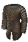
OklepSkull coatMesh Armor RokaviceLoath holdHeavy Gloves
RokaviceLoath holdHeavy GlovesRecepti in rune · 8 run, 2 runeworda, 1 craft
EldEthThulAmn ×2Shael ×2KoFeral Rage 20Fire Claws 20Lycanthropy 20Molten Boulder 20Carrion Vine 1Firestorm 1Fissure 1Heart of Wolverine 1Oak Sage 1Poison Creeper 1Solar Creeper 1Spirit of Barbs 1Volcano 1Werewolf 1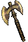
OrožjeHellslayerv socketih: 4× Shael Rune · korupcija: IASHelmJalal's Manev socketih: 3× Rainbow Facet (Fire) · korupcija: socketiOklepSteel Carapace (eth)v socketih: Scintillating Jewel of Freedom, 2× Rainbow Facet (Fire) · korupcija: socketi RokaviceHellmouthkorupcija: Half Freeze DurationPasSiggard's Staunch (eth)korupcija: Half Freeze Duration
RokaviceHellmouthkorupcija: Half Freeze DurationPasSiggard's Staunch (eth)korupcija: Half Freeze Duration ŠkornjiMerman's Sprocketkorupcija: Faster Run WalkAmuletBlood Craft - Druidkorupcija: All SkillsPrstanWisp Projectorkorupcija: Faster Run/WalkPrstanBul Katho's Wedding Bandkorupcija: Faster Run/WalkSwitchCall to ArmsAmnRalMalIstOhm · Double AxeSwitch 2Lidless Wallkorupcija: All SkillsHellfire TorchAnnihilus +2
ŠkornjiMerman's Sprocketkorupcija: Faster Run WalkAmuletBlood Craft - Druidkorupcija: All SkillsPrstanWisp Projectorkorupcija: Faster Run/WalkPrstanBul Katho's Wedding Bandkorupcija: Faster Run/WalkSwitchCall to ArmsAmnRalMalIstOhm · Double AxeSwitch 2Lidless Wallkorupcija: All SkillsHellfire TorchAnnihilus +2Merc: Desert Guard (Defiance)
 OrožjeInfinity (eth)BerMalBerIst · Ogre AxeHelmFlickering Flame (eth)NefPulVex · Bone Visage
OrožjeInfinity (eth)BerMalBerIst · Ogre AxeHelmFlickering Flame (eth)NefPulVex · Bone Visage OklepTemplar's Might (eth)v socketih: 3× Scintillating Jewel of Fervor · korupcija: socketiPasString of Ears (eth)korupcija: Increased Attack SpeedRokaviceDracul's Grasp (eth)korupcija: Increased Attack SpeedŠkornjiMarrowwalk (eth)
OklepTemplar's Might (eth)v socketih: 3× Scintillating Jewel of Fervor · korupcija: socketiPasString of Ears (eth)korupcija: Increased Attack SpeedRokaviceDracul's Grasp (eth)korupcija: Increased Attack SpeedŠkornjiMarrowwalk (eth)Recepti in rune · 17 run, 3 runewordi, 1 craft
NefRalAmn ×2Shael ×4PulMal ×2Ist ×2VexOhmBer ×2Kaj nosijo liki 90+ v S13 (skill Fire Claws na 20)
Jalal's Mane 48 %Hellmouth 40 %Gheed's Fortune 40 %Raven Frost 38 %Hellslayer 35 %Verdungo's Hearty Cord 28 %Bul-Kathos' Wedding Band 22 %Mara's Kaleidoscope 20 %String of Ears 20 %Siggard's Staunch 20 % Shaftstop 18 %Waterwalk 15 %
Shaftstop 18 %Waterwalk 15 %Video in vodiči
Wolf - FuryGood
Leveling
Rune za ves build (13)
 ElRalAmn
ElRalAmn SolDol
SolDol LumPulMal ×2IstOhmLoBer
LumPulMal ×2IstOhmLoBerPlanerji (Hiim)
Feral Rage 20Fury 20Heart of Wolverine 20Lycanthropy 20Werewolf 20Oak Sage 3Poison Creeper 1Rabies 1Spirit of Barbs 1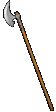
OrožjeTomb Reaver HelmCerebus' BiteElSolDolLo · Boneweave
HelmCerebus' BiteElSolDolLo · Boneweave RokaviceSoul DrainerPasVerdungo's Hearty Cord
RokaviceSoul DrainerPasVerdungo's Hearty Cord ŠkornjiGore RiderAmuletMetalgridPrstanRaven FrostPrstanBul-Kathos' Death BandSwitchCall to ArmsAmnRalMalIstOhm · Crystal SwordSwitch 2Lidless WallHellfire TorchAnnihilus
ŠkornjiGore RiderAmuletMetalgridPrstanRaven FrostPrstanBul-Kathos' Death BandSwitchCall to ArmsAmnRalMalIstOhm · Crystal SwordSwitch 2Lidless WallHellfire TorchAnnihilusMerc: Rogue Scout (Meditation)
 OrožjeWrathPulLumBerMal · Demon CrossbowDruga rokaAnvilguard Strap
OrožjeWrathPulLumBerMal · Demon CrossbowDruga rokaAnvilguard Strap HelmAndariel's VisageOklepTemplar's MightRokaviceDracul's GraspŠkornjiMarrowwalkPasString of Ears
HelmAndariel's VisageOklepTemplar's MightRokaviceDracul's GraspŠkornjiMarrowwalkPasString of EarsRecepti in rune · 13 run, 3 runewordi
ElRalAmnSolDolLumPulMal ×2IstOhmLoBerKaj nosijo liki 90+ v S13 (skill Fury na 20)
Raven Frost 62 %Gore Rider 56 %Gheed's Fortune 48 %Verdungo's Hearty Cord 41 %Tomb Reaver 39 %Fortitude 31 %Cerebus' Bite 30 %Soul Drainer 29 %Metalgrid 26 %Bul-Kathos' Death Band 25 %Jalal's Mane 21 %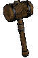
The Cranium Basher 18 %Video in vodiči
Wind ElementalDecentStarter
Leveling
Rune za ves build (13)
Ral ×2 OrtShael ×3HelLemGul
OrtShael ×3HelLemGul Cham ×2Zod ×2
Cham ×2Zod ×2Planerji (Hiim)
Arctic Blast 20Hurricane 20Tornado 20Twister 20Oak Sage 11Gust 4Carrion Vine 1Cyclone Armor 1Heart of Wolverine 1Poison Creeper 1Solar Creeper 1Spirit of Barbs 1OrožjeHorizon's Tornadokorupcija: Faster Cast Rate Druga rokaTwilight's Reflectionv socketih: 2× Shael Rune · korupcija: All Skills
Druga rokaTwilight's Reflectionv socketih: 2× Shael Rune · korupcija: All Skills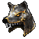
HelmFenrisv socketih: Ral Rune, Ort Rune · korupcija: SkillOklepSteel Carapacev socketih: Ral Rune, Cham Rune · korupcija: SkillRokaviceTrang-Oul's Clawskorupcija: Faster Cast RatePasSiggard's Staunchkorupcija: FHR ŠkornjiSilkweavekorupcija: Life per killAmuletGaea's Amuletkorupcija: Faster Cast RatePrstanBul Katho's Wedding Bandkorupcija: Faster Cast RatePrstanWisp Projectorkorupcija: Life per killHellfire TorchAnnihilus +2
ŠkornjiSilkweavekorupcija: Life per killAmuletGaea's Amuletkorupcija: Faster Cast RatePrstanBul Katho's Wedding Bandkorupcija: Faster Cast RatePrstanWisp Projectorkorupcija: Life per killHellfire TorchAnnihilus +2Merc: Desert Guard (Defiance)
HelmFerocityZodChamShael · Bone VisageOklepInnocenceGulLemZodHel · Archon Plate OrožjeThe Reaper's Toll
OrožjeThe Reaper's Toll RokaviceLaying of Hands
RokaviceLaying of Hands ŠkornjiRite of PassagePasString of Ears
ŠkornjiRite of PassagePasString of EarsRecepti in rune · 13 run, 2 runeworda
Ral ×2OrtShael ×3HelLemGulCham ×2Zod ×2Kaj nosijo liki 90+ v S13 (skill Tornado na 20)
Gheed's Fortune 48 %Frostwind 39 %Snowclash 37 %Medusa's Gaze 31 %Nightwing's Veil 25 %Horizon's Tornado 24 %Mara's Kaleidoscope 23 %Arachnid Mesh 23 %Skin of the Vipermagi 20 %The Stone of Jordan 17 %Bul-Kathos' Wedding Band 17 % Aldur's Deception 15 %
Aldur's Deception 15 % Bear - ShockwaveDecentStarter
Bear - ShockwaveDecentStarter
Leveling
Rune za ves build (7)
EldShaelLumKoPulMalBerPlanerji (Hiim)
Shock Wave 20Tornado 20Twister 20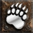
Werebear 20Lycanthropy 15Arctic Blast 1Carrion Vine 1Cyclone Armor 1Heart of Wolverine 1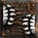
Maul 1Oak Sage 1Poison Creeper 1Solar Creeper 1Spirit of Barbs 1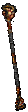
OrožjeBrimstone Rainkorupcija: All Skills OklepOrmus' Robeskorupcija: SkillRokaviceSoul Drainerkorupcija: Faster Cast RatePasArachnid Meshkorupcija: Faster Cast RateŠkornjiMerman's Sprocketkorupcija: Faster Run WalkAmuletCommunal Amulet of the ApprenticePrstanThe Stone of Jordankorupcija: Faster Cast RatePrstanThe Stone of Jordankorupcija: Life per killHellfire TorchAnnihilus +2
OklepOrmus' Robeskorupcija: SkillRokaviceSoul Drainerkorupcija: Faster Cast RatePasArachnid Meshkorupcija: Faster Cast RateŠkornjiMerman's Sprocketkorupcija: Faster Run WalkAmuletCommunal Amulet of the ApprenticePrstanThe Stone of Jordankorupcija: Faster Cast RatePrstanThe Stone of Jordankorupcija: Life per killHellfire TorchAnnihilus +2Merc: Rogue Scout (Vigor)
HelmVampire GazeOklepHustleShaelKoEld · Archon PlateOrožjeWrathPulLumBerMal · Demon CrossbowRokaviceDracul's Grasp ŠkornjiWar TravelerPasString of Ears
ŠkornjiWar TravelerPasString of EarsRecepti in rune · 7 run, 2 runeworda
EldShaelLumKoPulMalBerKaj nosijo liki 90+ v S13 (skill Shock Wave na 20)
Arachnid Mesh 67 %Gheed's Fortune 48 %Merman's Sprocket 48 %Jalal's Mane 38 % Ondal's Wisdom 33 %Skin of the Vipermagi 29 %Brimstone Rain 29 %Fenris 19 %Constricting Loop 19 %
Ondal's Wisdom 33 %Skin of the Vipermagi 29 %Brimstone Rain 29 %Fenris 19 %Constricting Loop 19 % Atma's Wail 14 %Bul-Kathos' Wedding Band 14 %Arkaine's Valor 14 %
Atma's Wail 14 %Bul-Kathos' Wedding Band 14 %Arkaine's Valor 14 %Armageddon autobomberDecent
Leveling
Rune za ves build (16)
NefRalAmnDolHelLemPulMalIst ×2GulVex ×2Ohm ×2ZodPlanerji (Hiim)
Molten Boulder 20Volcano 20Fire Claws 7Gust 3Arctic Blast 1Carrion Vine 1Cyclone Armor 1Firestorm 1Heart of Wolverine 1Hurricane 1Oak Sage 1Poison Creeper 1Raven 1Solar Creeper 1Spirit of Barbs 1Summon Dire Wolf 1Summon Grizzly 1Summon Spirit Wolf 1Tornado 1Twister 1OrožjeMang Song's LessonOklepSteel CarapaceRokaviceMagefistPasSiggard's StaunchŠkornjiMarrowwalkAmuletRare Amulet (+2 to Druid Skills, FCR)PrstanRare Ring (FCR)PrstanBul Katho's Wedding BandSwitchCall to ArmsAmnRalMalIstOhm · Crystal SwordSwitch 2Lidless WallHellfire TorchAnnihilusMerc: Iron Wolf (Static Field)
OrožjeSkyfallDruga rokaExileVexOhmIstDol · Vortex ShieldHelmFlickering FlameNefPulVex · Great HelmOklepInnocenceGulLemZodHel · Sacred ArmorRokaviceTrang-Oul's ClawsŠkornjiMarrowwalkPasString of EarsRecepti in rune · 16 run, 4 runewordi
NefRalAmnDolHelLemPulMalIst ×2GulVex ×2Ohm ×2ZodMolten Boulder 20Volcano 20Fire Claws 9Arctic Blast 1Carrion Vine 1Cyclone Armor 1Firestorm 1Gust 1Heart of Wolverine 1Hurricane 1Oak Sage 1Poison Creeper 1Raven 1Solar Creeper 1Spirit of Barbs 1Summon Dire Wolf 1Summon Grizzly 1Summon Spirit Wolf 1Tornado 1Twister 1OrožjeHellrackDruga rokaBannerlord's CallOklepSteel CarapaceRokaviceMagefistPasSiggard's StaunchŠkornjiMarrowwalkAmuletViper wingPrstanConstricting RingPrstanConstricting Ring SwitchCall to ArmsAmnRalMalIstOhm · Divine ScepterSwitch 2Lidless WallHellfire TorchAnnihilus
SwitchCall to ArmsAmnRalMalIstOhm · Divine ScepterSwitch 2Lidless WallHellfire TorchAnnihilusMerc: Iron Wolf (Static Field)
OrožjeSkyfallDruga rokaExileVexOhmIstDol · Vortex ShieldHelmFlickering FlameNefPulVex · Bone VisageOklepInnocenceGulLemZodHel · Lacquered PlateRokaviceDracul's GraspŠkornjiMarrowwalkPasVerdungo's Hearty CordRecepti in rune · 16 run, 4 runewordi
NefRalAmnDolHelLemPulMalIst ×2GulVex ×2Ohm ×2ZodKaj nosijo liki 90+ v S13 (skill Armageddon na 20)
Magefist 46 %Gheed's Fortune 46 %Steel Carapace 39 %Siggard's Staunch 36 %Mang Song's Lesson 31 %Bul-Kathos' Wedding Band 21 %Arachnid Mesh 19 %Hellrack 16 %Mara's Kaleidoscope 15 %Raven Frost 14 %Bannerlord's Call 14 %TwisterGood
Leveling
Rune za ves build (39)
Tir ×2Eth ×2 Ith
Ith TalRalOrt ×2ThulAmn ×2SolShaelDolHelLum ×2LemPulUmMal ×3Ist ×3GulVexOhm ×2Lo ×4Ber ×3Zod
TalRalOrt ×2ThulAmn ×2SolShaelDolHelLum ×2LemPulUmMal ×3Ist ×3GulVexOhm ×2Lo ×4Ber ×3ZodPlanerji (Hiim)
Arctic Blast 14Carrion Vine 1Cyclone Armor 1Gust 1Heart of Wolverine 1Oak Sage 1Poison Creeper 1Raven 1Solar Creeper 1Spirit of Barbs 1Summon Dire Wolf 1Summon Grizzly 1Summon Spirit Wolf 1ThulTir · Club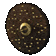
Druga rokaSplendorEthLum · Small Shield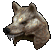
HelmLoreOrtSol · Wolf Head OklepStealthTalEth · Quilted Armor
OklepStealthTalEth · Quilted Armor RokaviceCaster Craft GlovesLeather Gloves
RokaviceCaster Craft GlovesLeather Gloves PasCaster Craft BeltSashAmuletCommunal AmuletPrstanGrim eyePrstanChaos finger
PasCaster Craft BeltSashAmuletCommunal AmuletPrstanGrim eyePrstanChaos fingerMerc: Ascendant (Amplify Damage)
 HelmBitter casqueHelmOklepDeath suitBreast PlateRokaviceGrim fistHeavy GlovesŠkornjiGlyph greaveChain BootsBerMalBerIst · Gnarled Staff
HelmBitter casqueHelmOklepDeath suitBreast PlateRokaviceGrim fistHeavy GlovesŠkornjiGlyph greaveChain BootsBerMalBerIst · Gnarled StaffRecepti in rune · 14 run, 5 runewordov, 2 crafta
TirEth ×2IthTalOrt ×2ThulSolLumMalIstBer ×2Arctic Blast 20Hurricane 20Tornado 20Twister 20Gust 5Carrion Vine 1Cyclone Armor 1Heart of Wolverine 1Oak Sage 1Poison Creeper 1Raven 1Solar Creeper 1Spirit of Barbs 1Summon Dire Wolf 1Summon Grizzly 1Summon Spirit Wolf 1 OrožjeDangoon's Teachingv socketih: Tir Rune
OrožjeDangoon's Teachingv socketih: Tir Rune Druga rokaTaebaek's Gloryv socketih: Shael Rune
Druga rokaTaebaek's Gloryv socketih: Shael Rune HelmOndal's Almightyv socketih: Perfect Topaz
HelmOndal's Almightyv socketih: Perfect Topaz OklepHaemosu's Adamantv socketih: Perfect TopazRokaviceBlood knuckleGloves(L)
OklepHaemosu's Adamantv socketih: Perfect TopazRokaviceBlood knuckleGloves(L) PasNightsmokeŠkornjiImp ShankMesh BootsAmuletCommunal AmuletPrstanGrim eyePrstanChaos fingerHellfire TorchAnnihilus
PasNightsmokeŠkornjiImp ShankMesh BootsAmuletCommunal AmuletPrstanGrim eyePrstanChaos fingerHellfire TorchAnnihilusMerc: Ascendant (Amplify Damage)
HelmBitter casqueHelmOklepDeath suitBreast PlateRokaviceGrim fistHeavy GlovesŠkornjiGlyph greaveChain BootsBerMalBerIst · Gnarled StaffRecepti in rune · 6 run, 1 runeword
TirShaelMalIstBer ×2Arctic Blast 20Hurricane 20Tornado 20Twister 20Oak Sage 18Gust 6Carrion Vine 1Cyclone Armor 1Heart of Wolverine 1Poison Creeper 1Solar Creeper 1Spirit of Barbs 1OrožjeHorizon's Tornadokorupcija: Faster Cast RateDruga rokaTwilight's Reflectionkorupcija: All SkillsOklepMIRROR DRUID FCRSacred ArmorRokaviceSoul Drainerkorupcija: Half Freeze DurationPasSiggard's Staunch (eth)korupcija: Faster Cast RateŠkornjiImp ShankMesh Boots · korupcija: Mana per killAmuletBlood Craft - Druidkorupcija: All SkillsPrstanWisp Projectorkorupcija: Faster Cast RatePrstanConstricting Ringkorupcija: Faster Cast RateSwitchCall to ArmsAmnRalMalIstOhm · Double AxeSwitch 2Lidless Wallkorupcija: All SkillsHellfire TorchAnnihilus +2Merc: Iron Wolf (Static Field)
OrožjeSkyfallv socketih: 2× Rainbow Facet (Lightning) · korupcija: Light PierceHelmGriffon's Eyev socketih: 3× Rainbow Facet (Lightning) · korupcija: socketiOklepInnocence (eth)GulLemZodHel · Gothic PlatePasArachnid Meshkorupcija: Faster Cast RateRokaviceOccultistkorupcija: Faster Cast RateŠkornjiMarrowwalkDruga rokaExileVexOhmIstDol · TargeRecepti in rune · 14 run, 3 runewordi, 1 craft
RalAmn ×2DolHelLemMalIst ×2GulVexOhm ×2ZodArctic Blast 20Hurricane 20Oak Sage 20Tornado 20Twister 20Gust 2Carrion Vine 1Cyclone Armor 1Heart of Wolverine 1Poison Creeper 1Solar Creeper 1Spirit of Barbs 1OklepSteel Carapace (eth)v socketih: Scintillating Jewel of Freedom · korupcija: SkillRokaviceSoul Drainerkorupcija: Faster Cast RatePasSiggard's Staunch (eth)korupcija: Faster Cast RateŠkornjiImp ShankMesh Boots · korupcija: Mana per killAmuletBlood Craft - Druidkorupcija: CBFPrstanWisp Projectorkorupcija: Faster Cast RatePrstanBul Katho's Wedding Bandkorupcija: Faster Cast RateSwitchCall to ArmsAmnRalMalIstOhm · Double AxeSwitch 2Lidless Wallkorupcija: All SkillsHellfire TorchAnnihilus +2Merc: Rogue Scout (Vigor)
HelmVampire Gazekorupcija: Physical Damage Reduction %OklepInnocence (eth)GulLemZodHel · Sacred ArmorPasString of Ears (eth)korupcija: Increased Attack SpeedRokaviceDracul's Grasp (eth)korupcija: Increased Attack SpeedŠkornjiMarrowwalk (eth)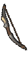
OrožjeWrathPulLumBerMal · Grand Matron Bow Druga rokaTombsongv socketih: Um Rune · korupcija: IAS
Druga rokaTombsongv socketih: Um Rune · korupcija: IASRecepti in rune · 19 run, 3 runewordi, 1 craft
RalAmn ×2HelLumLemPulUmMal ×2IstGulOhmLo ×4BerZodKaj nosijo liki 90+ v S13 (skill Twister na 20)
Gheed's Fortune 54 %Arachnid Mesh 48 %Horizon's Tornado 39 %Skin of the Vipermagi 29 %Fenris 29 %Twilight's Reflection 25 %Trang-Oul's Claws 24 %Mara's Kaleidoscope 20 %Aldur's Deception 19 % Gerke's Sanctuary 19 %
Gerke's Sanctuary 19 % Aldur's Advance 18 %Verdungo's Hearty Cord 18 %
Aldur's Advance 18 %Verdungo's Hearty Cord 18 %Video in vodiči
Summon DruidDecentStarter
Leveling
Rune za ves build (25)
EldTirEth ×3TalOrt ×2Thul ×2Sol ×3Shael IoLum ×2Ko ×2PulMalIstVexBer ×2
IoLum ×2Ko ×2PulMalIstVexBer ×2Planerji (Hiim)
Heart of Wolverine 20Raven 20Summon Grizzly 20Summon Spirit Wolf 20Gust 5Arctic Blast 1Carrion Vine 1Cyclone Armor 1Poison Creeper 1Solar Creeper 1Summon Dire Wolf 1ThulTir · Club Druga rokaSplendorEthLum · Bone Shield
Druga rokaSplendorEthLum · Bone Shield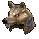
HelmLoreOrtSol · Spirit MaskOklepHustleShaelKoEld · Archon Plate RokaviceBloodfist
RokaviceBloodfist PasGloom's TrapŠkornjiRite of PassageAmuletKeeper's AmuletPrstanNagelringPrstanNagelring
PasGloom's TrapŠkornjiRite of PassageAmuletKeeper's AmuletPrstanNagelringPrstanNagelringMerc: Rogue Scout (Vigor)
Recepti in rune · 9 run, 4 runewordi
EldTirEthOrtThulSolShaelLumKoHeart of Wolverine 20Raven 20Summon Grizzly 20Summon Spirit Wolf 20Gust 10Arctic Blast 1Carrion Vine 1Cyclone Armor 1Poison Creeper 1Solar Creeper 1Summon Dire Wolf 1 OrožjeAthena's Wrathkorupcija: socketiOrtSol · Spirit MaskOklepSkin of the Vipermagikorupcija: socketiRokaviceTrang-Oul's ClawsPasGloom's TrapŠkornjiRite of PassageAmuletKeeper's Amuletkorupcija: All SkillsPrstanNagelringPrstanNagelring
OrožjeAthena's Wrathkorupcija: socketiOrtSol · Spirit MaskOklepSkin of the Vipermagikorupcija: socketiRokaviceTrang-Oul's ClawsPasGloom's TrapŠkornjiRite of PassageAmuletKeeper's Amuletkorupcija: All SkillsPrstanNagelringPrstanNagelringMerc: Ascendant (Amplify Damage)
HelmLoreOrtSol · Bone HelmOklepStealthTalEth · Light Plate OrožjeMemoryLumIoSolEth · Archon StaffRokaviceMagefistŠkornjiRite of PassagePasGloom's Trap
OrožjeMemoryLumIoSolEth · Archon StaffRokaviceMagefistŠkornjiRite of PassagePasGloom's TrapRecepti in rune · 10 run, 4 runewordi
Eth ×2TalOrt ×2Sol ×3IoLumHeart of Wolverine 20Raven 20Summon Grizzly 20Summon Spirit Wolf 20Gust 10Arctic Blast 1Carrion Vine 1Cyclone Armor 1Poison Creeper 1Solar Creeper 1Summon Dire Wolf 1OklepArkaine's Valorkorupcija: SkillRokaviceOccultistPasArachnid MeshŠkornjiRite of PassageAmuletKeeper's Amuletkorupcija: All SkillsPrstanBul Katho's Wedding BandPrstanBul Katho's Wedding BandAnnihilusHellfire TorchMerc: Ascendant (Amplify Damage)
HelmLoreOrtSol · Bone HelmOklepStealthTalEth · Light PlateOrožjeInfinityBerMalBerIst · Archon StaffRokaviceMagefistŠkornjiRite of PassagePasGloom's TrapRecepti in rune · 8 run, 3 runewordi
EthTalOrtSolMalIstBer ×2Heart of Wolverine 20Raven 20Summon Grizzly 20Summon Spirit Wolf 20Summon Dire Wolf 11Gust 10Arctic Blast 1Carrion Vine 1Cyclone Armor 1Poison Creeper 1Solar Creeper 1OrožjeHeart of the OakKoVexPulThul · FlailDruga rokaSpirit Wardkorupcija: All Skills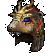
HelmDenmotherkorupcija: SkillOklepArkaine's Valorkorupcija: SkillRokaviceOccultistPasArachnid MeshŠkornjiMarrowwalkAmuletKeeper's Amuletkorupcija: All SkillsPrstanBul Katho's Wedding BandPrstanBul Katho's Wedding BandAnnihilusHellfire TorchMerc: Desert Guard (Blessed Aim)
 HelmCrown of AgesOklepTemplar's MightOrožjeThe Reaper's TollRokaviceLaying of HandsŠkornjiRite of PassagePasString of Ears
HelmCrown of AgesOklepTemplar's MightOrožjeThe Reaper's TollRokaviceLaying of HandsŠkornjiRite of PassagePasString of EarsRecepti in rune · 4 rune, 1 runeword
ThulKoPulVexHeart of Wolverine 20Summon Dire Wolf 20Summon Grizzly 20Summon Spirit Wolf 20Raven 11Gust 10Arctic Blast 1Carrion Vine 1Cyclone Armor 1Poison Creeper 1Solar Creeper 1OrožjeAthena's Wrathkorupcija: All SkillsOklepArkaine's Valorkorupcija: SkillRokaviceOccultistPasArachnid MeshŠkornjiMarrowwalkAmuletKeeper's Amuletkorupcija: All SkillsPrstanBul Katho's Wedding BandPrstanBul Katho's Wedding BandAnnihilusHellfire TorchMerc: Desert Guard (Blessed Aim)
HelmCrown of AgesOklepTemplar's MightOrožjeThe Reaper's TollRokaviceLaying of HandsŠkornjiRite of PassagePasString of EarsHeart of Wolverine 20Raven 20Summon Grizzly 20Summon Spirit Wolf 20Gust 5Arctic Blast 1Carrion Vine 1Cyclone Armor 1Poison Creeper 1Solar Creeper 1Summon Dire Wolf 1ThulTir · ClubDruga rokaSplendorEthLum · Bone ShieldOrtSol · Spirit MaskOklepHustleShaelKoEld · Archon PlateRokaviceBloodfistPasGloom's TrapŠkornjiRite of PassageAmuletKeeper's AmuletPrstanNagelringPrstanNagelringMerc: Rogue Scout (Vigor)
Recepti in rune · 9 run, 4 runewordi
EldTirEthOrtThulSolShaelLumKoKaj nosijo liki 90+ v S13 (skill Summon Grizzly na 20)
Gheed's Fortune 56 %Arachnid Mesh 55 %Denmother 36 %Aldur's Stony Gaze 29 %Heart of the Oak 27 %Spirit Ward 25 %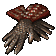
Chance Guards 24 %Aldur's Advance 23 %Bul-Kathos' Wedding Band 21 %Spirit 19 %Mara's Kaleidoscope 17 %Arkaine's Valor 16 %Pure Poison CreeperBrez ocene
Leveling
Rune za ves build (19)
ElEldEthRalAmnDolHel ×2LemMalIst ×2GulVex ×2Ohm ×2Zod ×2Planerji (Hiim)
Carrion Vine 20Oak Sage 20Poison Creeper 20Solar Creeper 20Gust 14Summon Grizzly 5Arctic Blast 1Cyclone Armor 1Heart of Wolverine 1Raven 1Spirit of Barbs 1Summon Dire Wolf 1Summon Spirit Wolf 1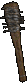
OrožjeCrafted Barbed Club (+2 to Druid Skills, FCR)Barbed ClubDruga rokaSpirit Ward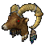
HelmSpirit KeeperOklepArkaine's ValorRokaviceOccultistPasArachnid MeshŠkornjiMarrowwalkAmuletMagic Amulet (+2 to All Skills)PrstanThe Stone of JordanPrstanBul Katho's Wedding BandSwitchCall to ArmsAmnRalMalIstOhm · Divine ScepterHellfire TorchMerc: Iron Wolf (Static Field)
HelmGriffon's EyeOklepInnocence (eth)GulLemZodHel · Lacquered PlateRokaviceOccultistPasString of EarsOrožjeBreath of the Dying (eth)VexHelElEldZodEth · Crystal SwordDruga rokaExile (eth)VexOhmIstDol · Sacred TargeŠkornjiMarrowwalkRecepti in rune · 19 run, 4 runewordi
ElEldEthRalAmnDolHel ×2LemMalIst ×2GulVex ×2Ohm ×2Zod ×2Kaj nosijo liki 90+ v S13 (skill Poison Creeper na 20)
Arachnid Mesh 48 %Gheed's Fortune 37 %Spirit Ward 35 %Stormshield 32 %Bul-Kathos' Wedding Band 30 %Bramble 29 %Jalal's Mane 29 %Aldur's Stony Gaze 27 %Plague Bearer 26 %The Stone of Jordan 22 %Venom Grip 21 %Raven Frost 21 %